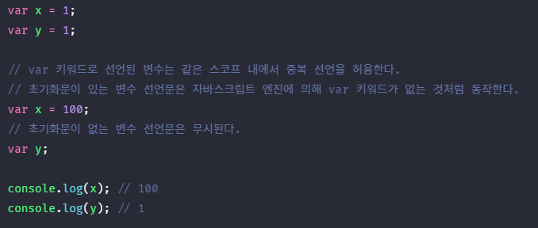
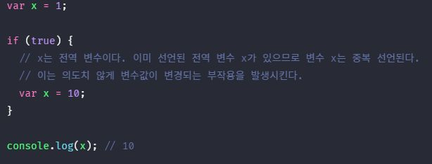
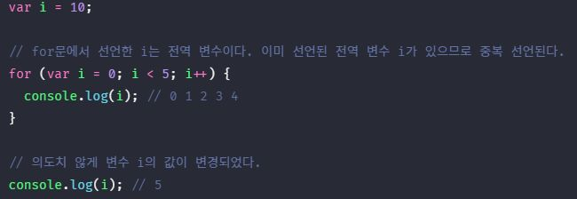
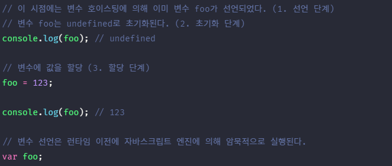
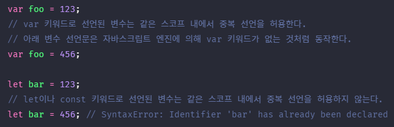
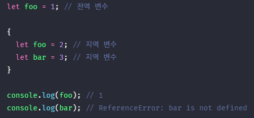
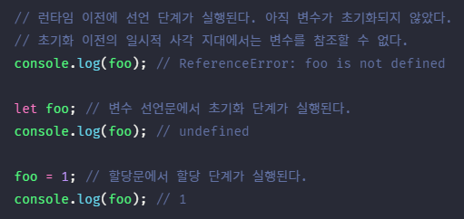
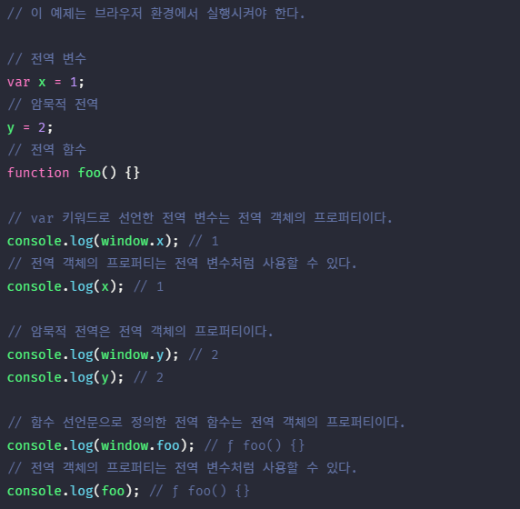
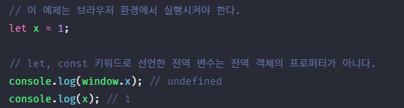
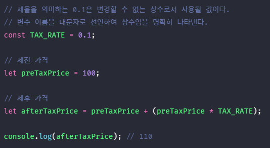

1. var 키워드로 선언한 변수의 문제점 #
ES5까지 변수를 선언할 수 있는 유일한 방법은 var 키워드를 사용하는 것이었다. var 키워드로 선언된 변수는 아래와 같은 특징이 있다. 이는 다른 언어와는 구별되는 독특한 특징으로 주의를 기울이지 않으면 심각한 문제를 발생시킬 수 있다.
1.1. 변수 중복 선언 허용 #
var 키워드로 선언한 변수는 중복 선언이 가능하다. 아래 예제를 살펴보자.

위 예제의 var 키워드로 선언한 변수 x와 y는 중복 선언되었다. 이처럼 var 키워드로 선언한 변수를 중복 선언하면 초기화문 유무에 따라 다르게 동작한다. 초기화문이 있는 변수 선언문은 자바스크립트 엔진에 의해 var 키워드가 없는 것처럼 동작하고 초기화문이 없는 변수 선언문은 무시된다. 이때 에러는 발생하지 않는다.
위 예제와 같이 만약 동일한 이름의 변수가 이미 선언되어 있는 것을 모르고 변수를 중복 선언하면서 값까지 할당했다면 의도치 않게 먼저 선언된 변수값이 변경되는 부작용이 발생한다.
1.2. 함수 레벨 스코프 #
var 키워드로 선언한 변수는 오로지 함수의 코드 블록 만을 지역 스코프로 인정한다. 따라서 함수 외부에서 var 키워드로 선언한 변수는 코드 블록 내에서 선언하여도 모두 전역 변수가 된다.


위 처럼 if문, for 문의 변수 선언문에서 var 키워드로 선언한 변수도 전역 변수가 된다.
함수 레벨 스코프는 전역 변수를 남발할 가능성을 높인다. 이로 인해 의도치 않게 전역 변수가 중복 선언되는 경우가 발생한다.
1.3. 변수 호이스팅 #
var 키워드로 변수를 선언하면 변수 호이스팅에 의해 변수 선언문이 스코프의 선두로 끌어 올려진 것처럼 동작한다. 즉, 변수 호이스팅에 의해 var 키워드로 선언한 변수는 변수 선언문 이전에 참조할 수 있다. 단, 할당문 이전에 변수를 참조하면 언제나 undefined를 반환한다.

변수 선언문 이전에 변수를 참조하는 것은 변수 호이스팅에 의해 에러를 발생시키지는 않지만 프로그램의 흐름 상 맞지 않을 뿐더러 가독성을 떨어뜨리고 오류를 발생시킬 여지를 남긴다.
2. let 키워드 #
앞에서 살펴본 var 키워드의 단점을 보완하기 위해 ES6에서는 새로운 변수 선언 키워드 let과 const를 도입하였다. var 키워드와의 차이점을 중심으로 let 키워드에 대해 살펴보자.
2.1. 변수 중복 선언 금지 #
방금 전 var 키워드로 동일한 이름을 갖는 변수를 중복 선언하면 아무런 에러가 발생하지 않았다. 하지만 let 키워드로 동일한 변수 이름을 중복 선언하면 문법 에러가 발생한다.

2.2. 블록 레벨 스코프 #
var 키워드로 선언한 변수는 오로지 함수의 코드 블록 만을 지역 스코프로 인정하는 함수 레벨 스코프를 따른다. 하지만 let 키워드로 선언한 변수는 모든 코드 블록(함수, if 문, for 문, while 문, try/catch 문 등) 을 지역 스코프로 인정하는 블록 레벨 스코프를 따른다. 아래 예제를 살펴보자.

let 키워드로 선언된 변수는 블록 레벨 스코프를 따른다. 따라서 위 예제에서 코드 블록 내에 선언된 변수 foo와 bar는 지역 변수이다.
함수도 코드 블록이므로 스코프를 만든다. 이때 함수 내의 코드 블록은 함수 레벨 스코프에 중첩된다.

2.3. 변수 호이스팅 #
var 키워드로 선언한 변수와는 달리 let 키워드로 선언한 변수는 변수 호이스팅이 발생하지 않는 것처럼 동작한다.
var 키워드로 선언한 변수는 런타임 이전에 자바스크립트 엔진에 의해 암묵적으로 “선언 단계”와 “초기화 단계”가 한번에 진행된다. 즉, 선언 단계에서 스코프(실행 컨텍스트의 렉시컬 환경에 변수 식별자를 등록하여 자바스크립트 엔진에 변수의 존재를 알린다. 그리고 즉시 초기화 단계에서 undefined로 변수를 초기화한다. 따라서 변수 선언문 이전에 변수에 접근하여도 스코프에 변수가 존재하기 때문에 에러가 발생하지 않는다. 다만 undefined를 반환한다. 이후 변수 할당문에 도달하면 비로소 값이 할당된다.

let 키워드로 선언한 변수는 “선언 단계”와 “초기화 단계”가 분리되어 진행된다. 즉, 런타임 이전에 자바스크립트 엔진에 의해 암묵적으로 선언 단계가 먼저 실행되지만 초기화 단계는 변수 선언문에 도달했을 때 실행된다.
만약 초기화 단계가 실행되기 이전에 변수에 접근하려고 하면 참조 에러가 발생한다. let 키워드로 선언한 변수는 스코프의 시작 지점부터 초기화 단계 시작 지점(변수 선언문)까지 변수를 참조할 수 없다. 스코프의 시작 지점부터 초기화 시작 지점까지 변수를 참조할 수 없는 구간을 일시적 사각지대라고 부른다.


2.4. 전역 객체와 let #
전역 객체는 코드가 실행되기 이전 단계에 자바스크립트 엔진에 의해 어떤 객체보다도 먼저 생성되는 특수한 객체이며 어떤 객체에도 속하지 않은 최상위 객체이다. 전역 객체는 클라이언트 사이드 환경(브라우저)에서는 window, 서버 사이드 환경(Node.js)에서는 global 객체를 가리킨다.
var 키워드로 선언한 전역 변수와 전역 함수 그리고 선언하지 않은 변수에 값을 할당한 암묵적 전역은 전역 객체의 프로퍼티가 된다. 전역 객체의 프로퍼티를 참조할 때 window를 생략할 수 있다.


let 키워드로 선언한 전역 변수는 전역 객체의 프로퍼티가 아니다. 즉, window.foo와 같이 접근할 수 없다. let 전역 변수는 보이지 않는 개념적인 블록(전역 렉시컬 환경의 선언적 환경 레코드) 내에 존재하게 된다. 자세한 내용은 실행 컨텍스트를 배울 때 살펴보자.
3. const 키워드 #
const 키워드는 상수를 선언하기 위해 사용한다. 하지만 반드시 상수만을 위해 사용하지는 않는다. const의 특징은 let과 대부분 동일하므로 let과 다른 점을 중심으로 살펴보도록 하자.
3.1. 선언과 초기화 #
const 키워드로 선언한 변수는 반드시 선언과 동시에 초기화가 이루어져야 한다.
그렇지 않고 초기화 후 다시 할당한다면 문법 에러가 발생한다.
const 키워드로 선언한 변수는 let 키워드로 선언한 변수와 마찬가지로 블록 레벨 스코프를 가지며 변수 호이스팅이 발생하지 않는 것처럼 동작한다.
3.2. 재할당 금지 #
var 또는 let 키워드로 선언한 변수는 재할당이 자유로우나 const 키워드로 선언한 변수는 재할당이 금지된다.
3.3. 상수 #
const 키워드로 선언한 변수에 원시값을 할당한 경우, 변수값을 변경할 수 없다. 원시값은 변경 불가능한 값이므로 재할당없이 값을 변경할 수 있는 방법이 없기 때문이다. 이러한 특징을 이용해 const 키워드를 상수를 표현하는 데 사용하기도 한다.
변수의 상대 개념인 상수는 재할당이 금지된 변수를 말한다. 상수도 값을 저장하기 위한 메모리 공간이 필요하므로 변수라고 할 수 있다. 단, 변수는 언제든지 재할당을 통해 변수값을 변경할 수 있지만 상수는 재할당이 금지된다.
상수는 상태 유지와 가독성, 유지보수의 편의를 위해 적극적으로 사용해야 한다. 아래 예제를 살펴보자.

const 키워드로 선언된 변수는 재할당이 금지된다. const 키워드로 선언된 변수에 원시 값을 할당한 경우, 원시 값은 변경할 수 없는 값이고 const 키워드에 의해 재할당이 금지되므로 할당된 값을 변경할 수 있는 방법은 없다. 또한 상수는 프로그램 전체에서 공통 사용하므로 나중에 세율이 변경되면 상수만을 변경하면 되기 때문에 유지보수성이 대폭 향상된다.
일반적으로 상수의 이름은 대문자로 선언하여 상수임을 명확히 나타낸다. 여러 단어로 이루어진 경우에는 언더스코어(_)로 구분하여 스네이크 케이스로 표현하는 것이 일반적이다.
3.4. const 키워드와 객체 #
const 키워드로 선언된 변수에 원시값을 할당한 경우, 값을 변경할 수 없다. 하지만 const 키워드로 선언된 변수에 객체를 할당한 경우, 값을 변경할 수 있다. 변경 불가능한 값인 원시값은 재할당없이 변경(교체)할 수 있는 방법이 없지만 변경 가능한 값인 객체는 재할당없이도 직접 변경이 가능하기 때문이다.

const 키워드는 재할당을 금지할 뿐 불변을 의미하지는 않는다. 다시 말해, 새로운 값을 재할당하는 것은 불가능하지만 프로퍼티 동적 생성, 삭제, 프로퍼티 값의 변경을 통해 객체를 변경하는 것은 가능하다. 이때 객체가 변경되더라도 변수에 할당된 참조값은 변경되지 않는다.
4. var vs. let vs. const #
변수 선언에는 기본적으로 const를 사용하고 let은 재할당이 필요한 경우에 한정해 사용하는 것이 좋다. 원시 값의 경우, 가급적 상수를 사용하는 편이 좋다. 그리고 객체를 재할당하는 경우는 생각보다 흔하지 않다. const 키워드를 사용하면 의도치 않은 재할당을 방지해 주기 때문에 보다 안전하다.
var와 let, 그리고 const 키워드는 다음처럼 사용하는 것을 권장한다.
- ES6를 사용한다면 var 키워드는 사용하지 않는다.
- 재할당이 필요한 경우에 한정해 let 키워드를 사용한다. 이때 변수의 스코프는 최대한 좁게 만든다.
- 변경이 발생하지 않고 읽기 전용으로 사용하는(재할당이 필요 없는 상수) 원시 값과 객체에는 const 키워드를 사용한다. const 키워드는 재할당을 금지하므로 var, let 키워드보다 안전하다.
변수를 선언하는 시점에는 재할당이 필요할지 잘 모르는 경우가 많다. 그리고 객체는 의외로 재할당을 하는 경우가 드물다.(Angular, React, Vue.js와 같은 SPA 프레임워크의 경우, 상태가 변경되었음을 명확히 하기 위해 변경된 객체를 재할당하는 경우도 있다.) 따라서 변수를 선언할 때에는 일단 const 키워드를 사용하도록 하자. 반드시 재할당이 필요하다면(반드시 재할당이 필요한지 한번 생각해 볼 일이다.) 그때 const 키워드를 let 키워드로 변경해도 결코 늦지 않는다.